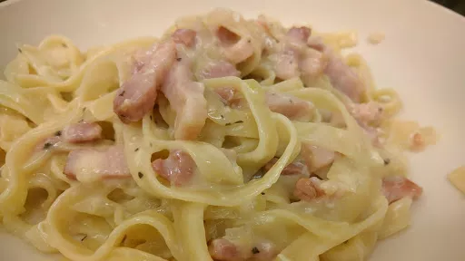

Spaghetti carbonara
20 mins
Serves
3

Ingredients
x0.5
x1
x2
x3
250
g spaghetti
1
onion, thinly sliced
1
clove garlic
200
g pack pancetta lardons
1
tbsp olive oil
2
eggs
a little freshly grated parmesan
1
tbsp chopped fresh basil
Instructions
Put the
spaghetti
250
g
on to cook.
Heat a little oil in a wok and fry onions and
garlic
1
clove
until the onions are soft. Add the
pancetta lardons
200
g pack
and cook until they begin to brown.
Put the
eggs
2
in a large bowl and beat well.
Drain the pasta, but retain a little of the cooking liquid (about
2
tablespoons).
Stir all the ingredients, except the
basil
1
tbsp
, into the bowl containing the beaten egg. The heat from the
spaghetti
250
g
and lardons should cook the
eggs
2
and create a creamy sauce.
Add the chopped
basil
1
tbsp
.
Nosh for graduates
Short Link
Long Link